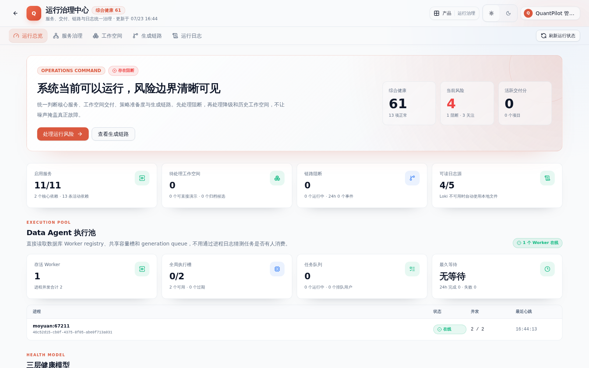
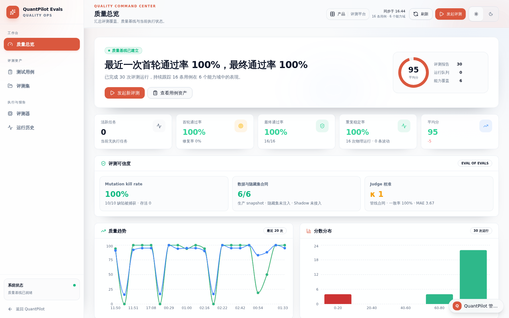

研究答案不等于可交付的研究工作
金融问题通常同时包含证券身份、时间范围、数据源、研究方法、交付格式和风险边界。只让模型“回答问题”，很难证明它用了什么数据、为什么这样分析、生成物能否运行，也无法稳定处理排队、重试、取消和多人并发。
金融问题通常同时包含证券身份、时间范围、数据源、研究方法、交付格式和风险边界。只让模型“回答问题”，很难证明它用了什么数据、为什么这样分析、生成物能否运行，也无法稳定处理排队、重试、取消和多人并发。
我把通用 Task、Dataset、Connector、Agent Profile、Delivery Pack 和 Execution Plan 留在 Data Agent 平台，把证券解析、行情、Skills、工具、Mission 和视觉规则收进 Finance Domain Pack；并打通 Next.js 产品面、MoAgent 执行层、Python 数据服务和 PostgreSQL/TimescaleDB。


截图来自当前本地实例。页面展示真实 Worker、评测和运行状态；案例没有创建额外研究任务，也没有触发模型费用。
项目和任务持久化 Profile、Domain、Delivery、capability 版本锁与 SHA-256，让一次运行能回到当时实际使用的组合。
模型生成 schema v4 语义合同，时间、宽域范围和 answer-only 意图必须有原文字面证据；证券 Resolver 再独立核验代码。
FastAPI 市场服务连接 PostgreSQL、TimescaleDB 与 Redis，承载行情、K 线、估值因子、补数状态和策略平台接口。
Generation job 与事务 outbox 进入独立 Worker；registry、全局槽位、公平 claim、双层配额、lease、fencing 和资源锁共同约束长任务。
Memory 与 AKEP 通过独立 HTTP 合同接入；运行前冻结无正文使用清单与知识快照，结束后分别记录 usage、outcome 和 feedback。
生成项目的 build/preview 默认进入 Linux user、mount、network、PID namespace；工作区只读、无平台密钥，预览仅通过受控 Unix Socket 和数据桥暴露。
模型先形成通用任务合同；Finance Domain Pack 再核验证券身份、时间范围、研究能力与交付意图。模型不可用时停止规划，不用关键词结果冒充成功。
平台组合 Profile、Domain、Delivery、Skills、Memory 与 Knowledge，并把版本哈希、数据身份和上下文清单固化到任务与 workspace。
独立 Worker 公平 claim 任务、持有分层 lease 与 fencing token；MoAgent 按 Mission 调用类型工具，在路径策略、mutation journal 与资源锁保护下写入工作空间。
生成项目先在 namespace 沙箱中 build/preview；HTTP、数据、证据、视觉、产物合同和 eval 再共同判断是否可交付，失败进入有记录的 repair loop。
当前能力市场管理 12 个版本化 Skills 和 64 条验证规则；业务知识中心再把 8 类量化能力映射为业务场景、交付规范和支持资源。
股票池、ETF/指数、策略、因子、板块资金、基础组件和金融知识共用本地数据契约；页面显式展示同步、补数和降级状态。
观察范围、证据采样、报告生成与推送回执形成研究生产链路；报告是可复核材料，不被包装成即时交易信号。
MoAgent 内核不内置证券、量化工具、dashboard 路径或金融 Mission；业务规则由 Domain Pack 注入，避免扩展新行业时继续修改执行引擎。
Memory Recall 与知识准备快照随任务固化，Worker 真正执行时不重新检索另一套输入，保证 evidence 与实际模型上下文可以对应。
显式 submit-result 只是候选终态；平台仍会检查数据、证据、视觉、产物合同、预览和评测，避免把模型自述当成交付事实。